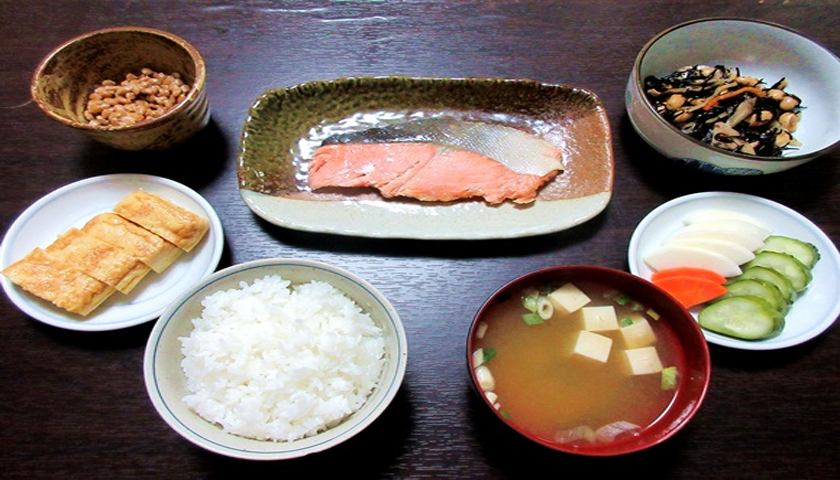
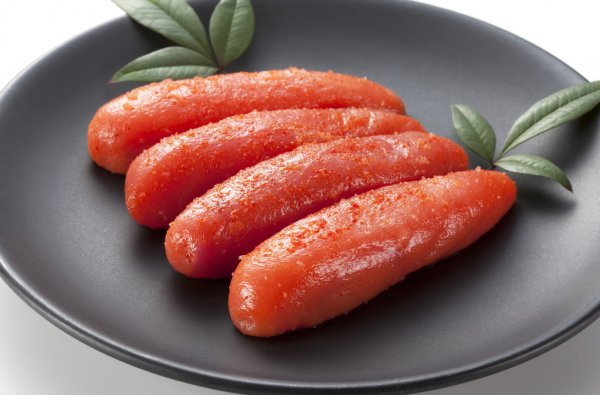

El desayuno tradicional Japonés para empezar el día. Una de las cosas que nos gustan cuando viajamos a Japón
y a la que nos adaptamos rápidamente es a su maravilloso desayuno, tan delicioso y tan distinto del nuestro.
TARAKO/MENTAIKO

Huevas de abadejo de alaska (comúnmente se conocen como huevas de bacalao). Las huevas se encuentran dentro de
una fina membrana. En Japón se ha hecho muy popular una salsa hecha con tarako que comercializa la empresa
Kewpie (la de la famosa mayonesa). Cuando hablamos de Mentaiko, nos referimos a tarako marinado con diferentes
aderezos y especias. Cuando la versión es aderezada con especias picantes se llama Karashi mentaiko.
Es huevo en japonés, y “Onsen” es el término nipón con el que se conocen las aguas termales en
las que se cocían estos huevos. La buena noticia es que hoy en día no hace falta tener aguas termales a mano:
Basta con usar un termocirculador para conseguir que la clara del huevo esté cuajada y la yema quede
deliciosamente cremosa.
El caldo que acompaña este huevo es una bomba de umami, el sexto sabor que vuelve locas nuestras papilas gustativas.
Tiene una base de dashi, un caldo elaborado con alga kombu y katsuobushi (las virutillas de bonito que ya estamos
acostumbrados a ver ondear encima de los yakisoba). Una vez hecho el caldo, se combina con Mirin, salsa de soja y
algunos copos más de bonito. El resultado es un sabrosísimo caldo que combina a la perfección con la suavidad del
huevo.
En japonés se utiliza la palabra “yakizakana” para referirse al pescado a la parrilla en general
y cuando el pescado es pequeño, suele servirse entero. Los pescados típicos que se comen son el
jurel (aji), el saurio (sanma), la caballa (saba) y el salmón (sake). Puede disfrutar de
yakisakana en cualquier lugar de Japón.
Es un plato fácil de hacer y un básico en la dieta japonesa. En Japón se come con casi todas las comidas
que van acompañadas también de arroz. Es tan básico que incluso se toma para desayunar.
Preparada a base de un caldo dashi y pasta de miso,Los ingredientes más habituales en esta sopa son el tōfu en forma de cubitos,
las algas wakame y cebolleta o puerro. Puede llevar otros ingredientes como verduras (patatas, zanahoria, daikon, repollo, etc), carnes, pescados o setas.